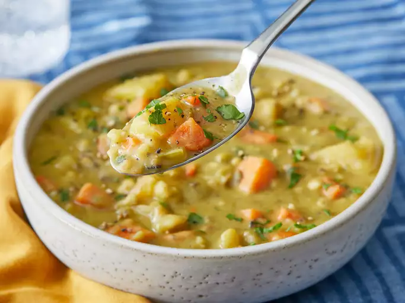

Vegan Split Pea Soup

Description
A hearty, thick soup filled with split peas, carrots, celery, and potatoes.
Ingredients:
- 1 Tblsp Vegetable Oil
- 1 Onion, chopped
- 3 cloves Garlic, minced
- 1 Bay Leaf
- 7 1/2 cups Water
- 2 cups Dried Split Peas
- 1/2 cup Barley
- 1 1/2 tsp Salt
- 3 Potatoes, diced
- 3 Carrots, chopped
- 3 stalks Celery, chopped
- 1/2 cup Parsely, chopped
- 1/2 tsp Dried Basil
- 1/2 tsp Dried Thyme
- 1/2 tsp Gound Black Pepper
Steps:
- Gather all of the ingredients.
- Heat oil in large pot over medium-high heat.
-
Saute onion, garlic, and bay leaf in hot oil until onions are
translucent, about 5 minutes.
- Add water, peas, baley, and salt; bring to a boil.
- Reduce heat to low and simmer for 2 hours, stirring occasionally.
-
Add potatoes, carrots, celery, parsley, basil, thyme, and pepper.
Simmer until peas and vegetables are tender, about 1 hour.